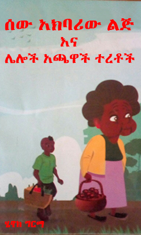
ሰው አክባሪው ልጅ sew akbariw lej ሄኖክ ግርማ · 2012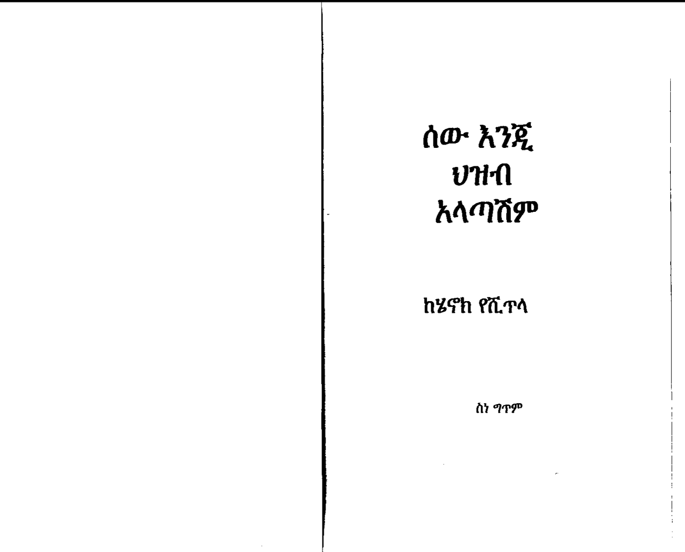
ሰው እንጂ ህዝብ አላጣሽም sew enji hezeb alatashem ሄኖክ የሺጥላ · 2012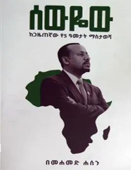
ሰውየው sewyew ሞሃመድ ሀሰን · 2019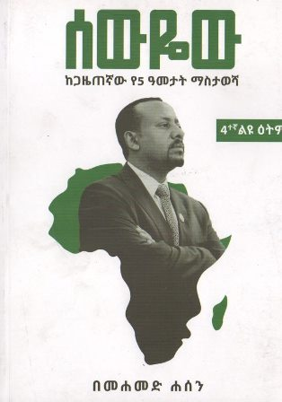
ሰውየው sewyew መሐመድ ሐሰን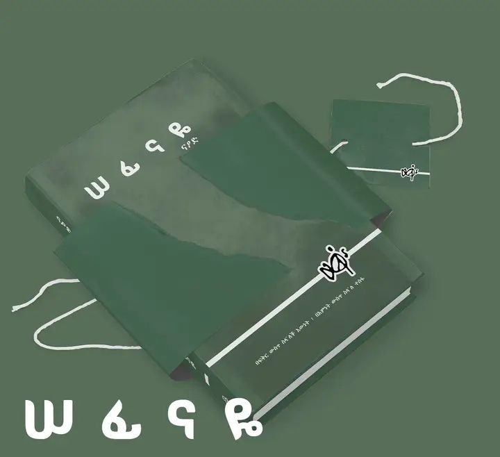
ሠፊናዬ Sefinaye Naod Wubetu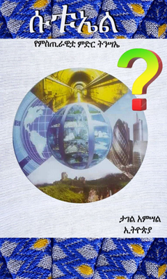
ሱቱኤል sutuel ታገል አምሳል · 2011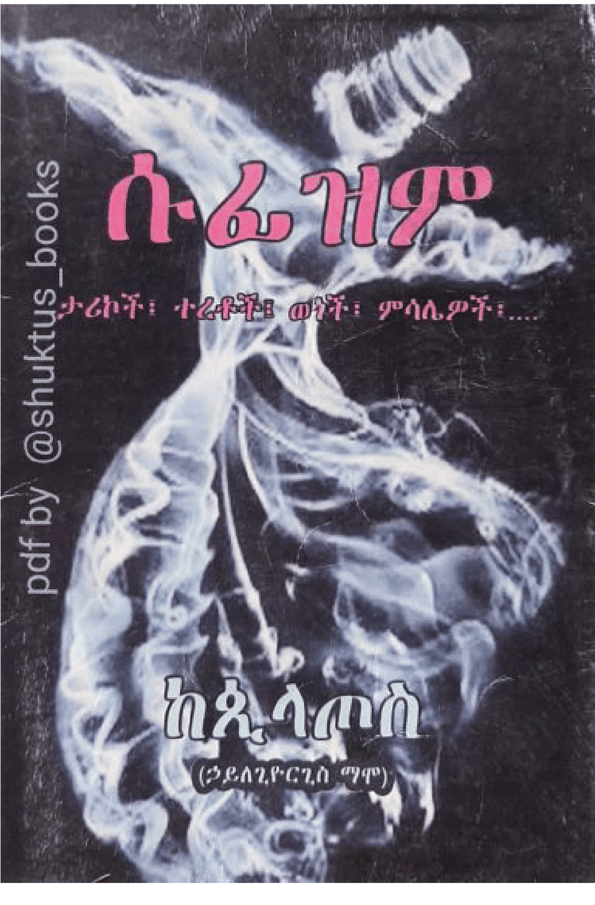
ሱፊዝም sufizem ኃይለጊዮርጊስ ማሞ, ጲላጦስ · 2014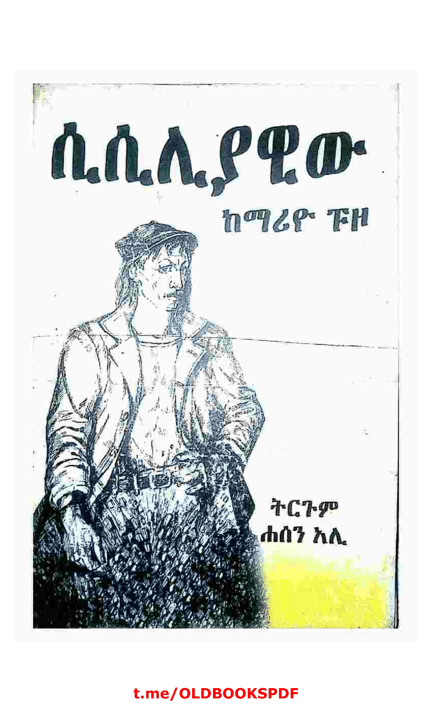
ሲሲሊያዊው sisiliyawiw ማሪዮ ፑዞ, ሐሰን አሊ, እሸቱ ጥሩነህ · 2008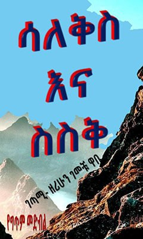
ሳለቅስ እና ስስቅ saleqes ena seseq ዘሪሁን ገመቹ · 2015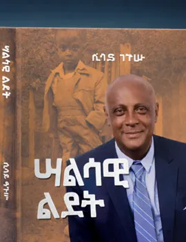
ሣልሳዊ ልደት salsawi ledet ሲሳይ ንጉሡ · 2018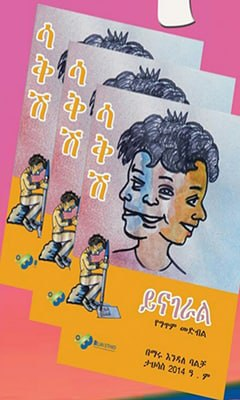
ሳቅሽ ይናገራል saqesh yenageral ማሩ እንዳለ ባልቻ · 2014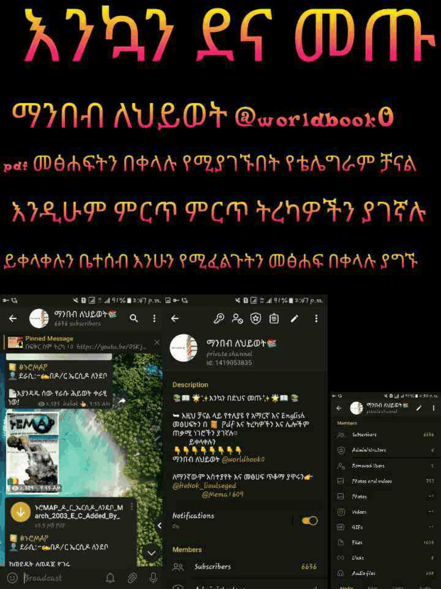
ሳቤላ sabela ሚስዝ ሔንሪ ዉድ, ኃይለ ሥላሴ መሓሪ · 2019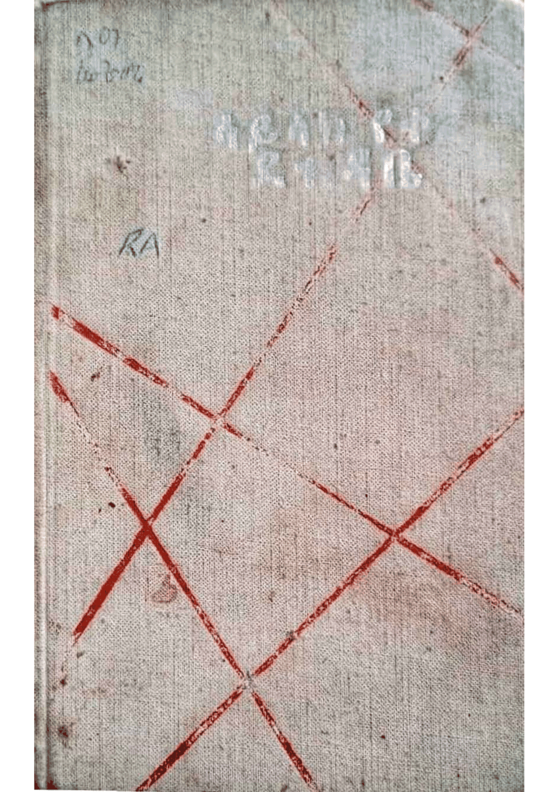
ሳይላክ የቀረ ደብዳቤ saylak yeqere debdabe ካሳ ገብረ ሕይወት, ዩ ኮፒሎቭ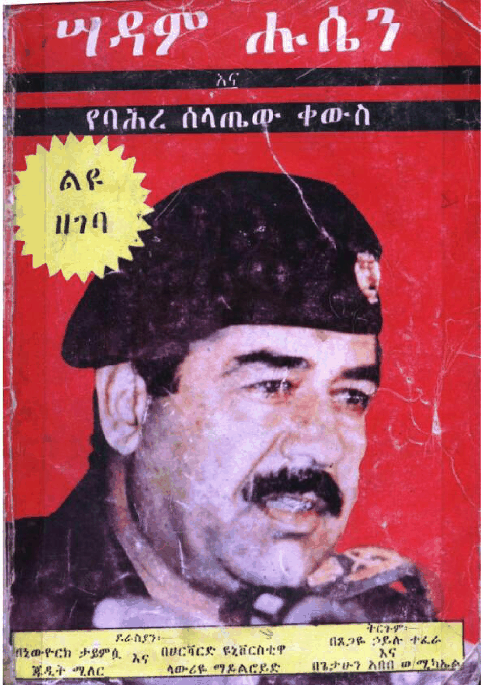
ሣዳም ሑሴን እና የባሕረ ሰላጤው ቀውስ sadam husen ena yebahre selatew qewes ጁዲት ሚለር, ላውሬዩ ማይልሮይ, ጸጋዬ ኃይሉ ተፈራ, ጌታሁን አበበ ወልደ ሚካኤል · 1983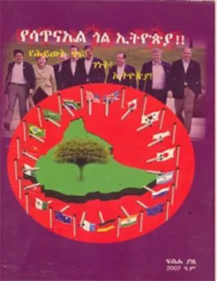
ሳጥናኤል ጎል ኢትዮጵያ satnael gol ityopya ዋሴ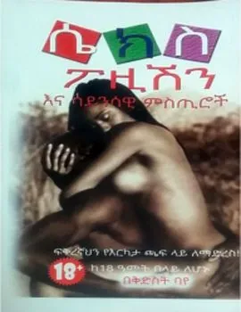
ሴክስ ፖዚሽን እና ሳይንሳዊ ምስጢሮች sekes pozishen ena sayensawi mestiroch ቅድስት ባዬ · 2017